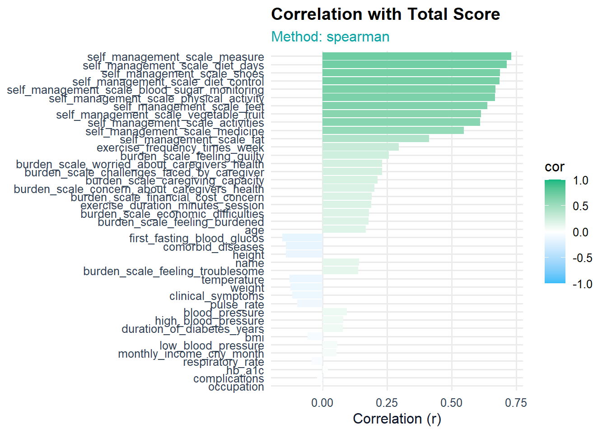
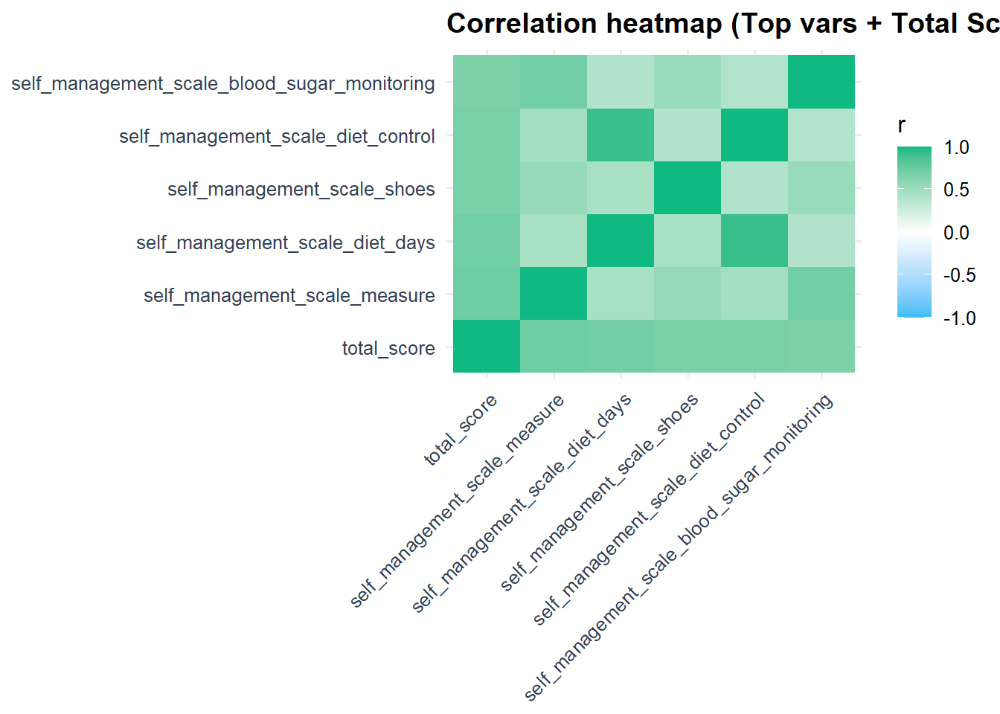
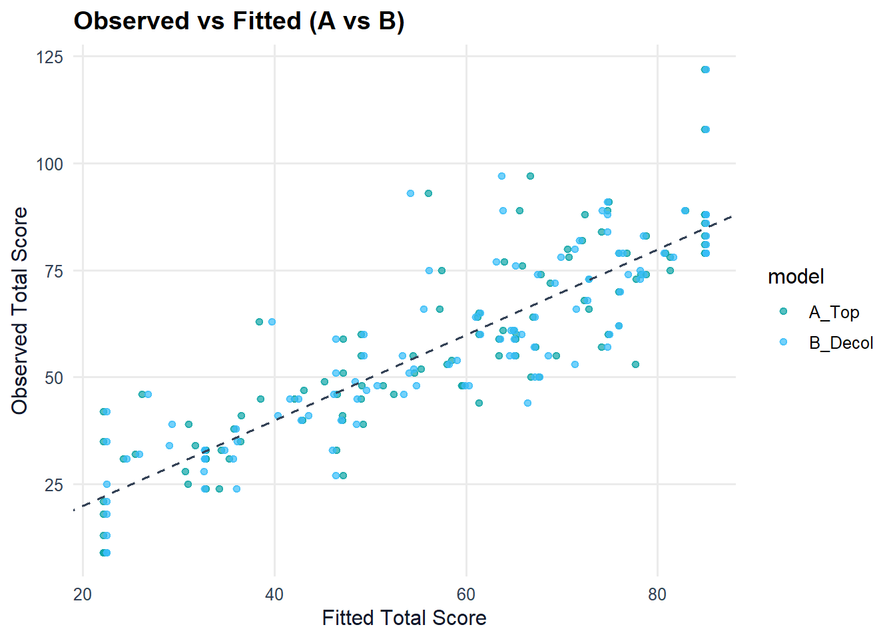
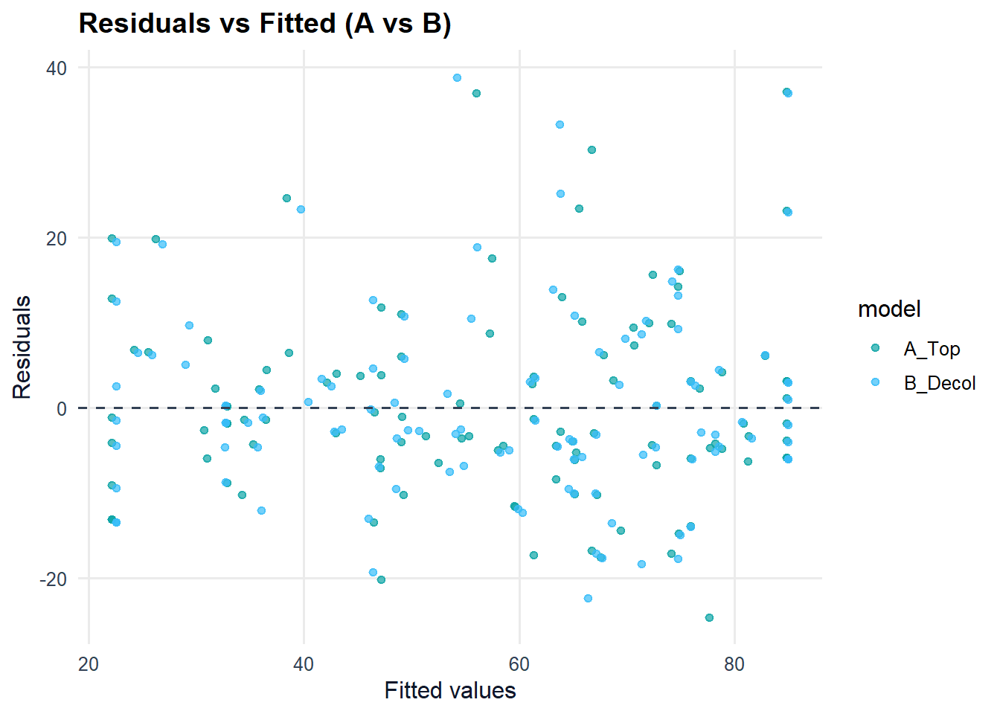

suppressPackageStartupMessages({
library(readxl); library(dplyr); library(tidyr); library(stringr); library(janitor)
library(ggplot2); library(patchwork); library(broom); library(car)
library(lmtest); library(sandwich); library(scales)
})Warning: package 'readxl' was built under R version 4.3.3Warning: package 'dplyr' was built under R version 4.3.2Warning: package 'tidyr' was built under R version 4.3.2Warning: package 'stringr' was built under R version 4.3.2Warning: package 'janitor' was built under R version 4.3.3Warning: package 'patchwork' was built under R version 4.3.3Warning: package 'broom' was built under R version 4.3.3Warning: package 'car' was built under R version 4.3.2Warning: package 'carData' was built under R version 4.3.2Warning: package 'lmtest' was built under R version 4.3.3Warning: package 'sandwich' was built under R version 4.3.3pal_bg <- c("#0ea5a6", "#38bdf8", "#10b981", "#0ea5e9", "#14b8a6")
theme_bg <- function(){
theme_minimal(base_size = 12) +
theme(plot.title = element_text(face = "bold"),
plot.subtitle = element_text(color = "#0ea5a6"),
panel.grid.minor = element_blank(),
axis.title = element_text(color = "#0f172a"),
axis.text = element_text(color = "#334155"),
legend.position = "right")
}
xlsx_path <- normalizePath("C:/Users/DELL/OneDrive/桌面/JHU Class/Patient Diabetes.xlsx",
winslash = "/", mustWork = TRUE)
sheets <- readxl::excel_sheets(xlsx_path)
best <- sheets[which.max(sapply(sheets, \(s) nrow(readxl::read_excel(xlsx_path, sheet = s, n_max = 10))))]
raw <- readxl::read_excel(xlsx_path, sheet = best) |> janitor::clean_names()
message("Loaded sheet: ", best)Loaded sheet: Sheet1char_df <- raw |> mutate(across(everything(), ~as.character(.) |> str_squish()))
has_cn <- char_df |>
mutate(across(everything(), ~str_detect(., "\\p{Han}"))) |>
transmute(row_cn = apply(across(everything()), 1, any)) |>
pull(row_cn) %>% replace_na(FALSE)
num_safe <- function(x){
x <- as.character(x)
x <- stringi::stri_trans_general(x, "Fullwidth-Halfwidth")
x <- gsub("[,，]", "", x)
x <- gsub("[^0-9\\.-]", "", x)
suppressWarnings(as.numeric(x))
}
num_df <- char_df |> mutate(across(everything(), num_safe))
is_numlike <- function(v) mean(!is.na(v)) >= 0.5 && dplyr::n_distinct(na.omit(v)) >= 5
num_cols <- names(num_df)[sapply(num_df, is_numlike)]
stopifnot(length(num_cols) >= 2)
clean0 <- num_df |>
filter(!has_cn) |>
drop_na(all_of(num_cols))
pick_col <- function(nm, patterns){
idx <- which(Reduce(`|`, lapply(patterns, function(p) grepl(p, nm, ignore.case = TRUE))))
if (length(idx) == 0) NA_character_ else nm[idx[1]]
}
nm <- names(clean0)
col_hba1c <- pick_col(nm, c("^hba1c$", "hb.?a1c", "glycated", "glyco.?hemoglobin", "糖化"))
col_total <- pick_col(nm, c("^total\\s*_?score$", "total\\s*score", "^score$", "总分"))
if (is.na(col_total)) stop("未找到 Total Score 列（例如 'Total Score' / 'total_score' / '总分'）。")
clean <- if (!is.na(col_hba1c)) {
before <- nrow(clean0); out <- clean0 |> filter(.data[[col_hba1c]] <= 30 | is.na(.data[[col_hba1c]]))
message("Removed HbA1c > 30%: ", before - nrow(out)); out
} else clean0Removed HbA1c > 30%: 0num_cols <- union(col_total, intersect(num_cols, names(clean)))
df_num <- clean |> select(all_of(num_cols)) |> drop_na(all_of(col_total))
n_total <- nrow(df_num)
method_used <- "spearman"
corr_vec <- sapply(setdiff(names(df_num), col_total), function(v){
suppressWarnings(cor(df_num[[v]], df_num[[col_total]], use = "complete.obs", method = method_used))
})
corr_tbl <- tibble(variable = names(corr_vec), cor = as.numeric(corr_vec)) |>
arrange(desc(abs(cor)))
k_top <- min(5, nrow(corr_tbl))
if (k_top < 1) stop("可用于相关性的自变量不足。")
top5_vars <- head(corr_tbl$variable, k_top)
message("Top vars: ", paste(top5_vars, collapse = ", "))Top vars: self_management_scale_measure, self_management_scale_diet_days, self_management_scale_shoes, self_management_scale_diet_control, self_management_scale_blood_sugar_monitoringp_bar <- ggplot(corr_tbl |> mutate(variable = reorder(variable, abs(cor))),
aes(x = variable, y = cor, fill = cor)) +
geom_col() + coord_flip() +
scale_fill_gradient2(low = "#38bdf8", mid = "white", high = "#10b981", limits = c(-1,1)) +
labs(title = "Correlation with Total Score",
subtitle = paste0("Method: ", method_used),
x = NULL, y = "Correlation (r)") + theme_bg()
print(p_bar)
heat_vars <- unique(c(col_total, top5_vars))
cor_mat <- suppressWarnings(cor(df_num[, heat_vars, drop = FALSE], use = "pairwise.complete.obs", method = method_used))
cor_df <- as.data.frame(as.table(cor_mat)); names(cor_df) <- c("Var1","Var2","Corr")
p_heat <- ggplot(cor_df, aes(Var1, Var2, fill = Corr)) +
geom_tile() +
scale_fill_gradient2(low = "#38bdf8", mid = "white", high = "#10b981", limits = c(-1,1)) +
labs(title = "Correlation heatmap (Top vars + Total Score)", x = NULL, y = NULL, fill = "r") +
theme_bg() + theme(axis.text.x = element_text(angle = 45, hjust = 1))
print(p_heat)
safe_design <- function(df, y, x_vars){
df_sub <- df |> select(all_of(c(y, x_vars))) |> drop_na()
k <- length(x_vars); if (k < 1) stop("x_vars 为空。")
safe_names <- paste0("x", seq_len(k))
map_tbl <- tibble(orig = x_vars, safe = safe_names)
# rename 使用 new = old
renamer <- setNames(x_vars, safe_names)
X <- df_sub |>
select(all_of(x_vars)) |>
rename(!!!renamer) |>
mutate(across(everything(), ~as.numeric(scale(.))))
out <- bind_cols(total = df_sub[[y]], X)
list(data = out, map = map_tbl)
}
A_prep <- safe_design(df_num, y = col_total, x_vars = top5_vars)
dat_A <- A_prep$data
map_A <- A_prep$map
stopifnot(all(paste0("x", seq_len(ncol(dat_A)-1)) %in% names(dat_A)))
fit_A <- lm(total ~ ., data = dat_A)
A_ols <- tidy(fit_A, conf.int = TRUE)
A_hc3 <- lmtest::coeftest(fit_A, vcov = sandwich::vcovHC(fit_A, type = "HC3")) |> broom::tidy(conf.int = TRUE)
A_gl <- glance(fit_A)[, c("r.squared","adj.r.squared","p.value","AIC","BIC")]
message("MODEL A adj.R2 = ", round(A_gl$adj.r.squared,3))MODEL A adj.R2 = 0.749reduce_collinearity <- function(dat, y){
fml <- reformulate(setdiff(names(dat), y), response = y)
fit <- lm(fml, data = dat)
repeat{
v <- tryCatch(car::vif(fit), error = function(e) NULL)
if (is.null(v) || max(v, na.rm = TRUE) <= 5 || length(v) <= 1) break
drop_var <- names(which.max(v))
dat <- dat |> select(-all_of(drop_var))
fml <- reformulate(setdiff(names(dat), y), response = y)
fit <- lm(fml, data = dat)
}
list(data = dat, fit = fit, vif = tryCatch(car::vif(fit), error = function(e) NULL))
}
B_red <- reduce_collinearity(dat_A, "total")
dat_B2 <- B_red$data; fit_B <- B_red$fit; vif_B <- B_red$vif
B_ols <- tidy(fit_B, conf.int = TRUE)
B_hc3 <- lmtest::coeftest(fit_B, vcov = sandwich::vcovHC(fit_B, type = "HC3")) |> broom::tidy(conf.int = TRUE)
B_gl <- glance(fit_B)[, c("r.squared","adj.r.squared","p.value","AIC","BIC")]
message("MODEL B adj.R2 = ", round(B_gl$adj.r.squared,3))MODEL B adj.R2 = 0.745set.seed(777)
K <- 5; n_cv <- nrow(dat_A); fold_id <- sample(rep(1:K, length.out = n_cv))
RMSE <- function(y, yhat) sqrt(mean((y - yhat)^2))
R2 <- function(y, yhat) 1 - sum((y - yhat)^2) / sum((y - mean(y))^2)
cv_collect <- list(A = data.frame(rmse=numeric(0), r2=numeric(0)),
B = data.frame(rmse=numeric(0), r2=numeric(0)))
for (k in 1:K){
tr <- dat_A[fold_id != k, , drop = FALSE]
te <- dat_A[fold_id == k, , drop = FALSE]
# A
fitA <- lm(total ~ ., data = tr)
predA <- predict(fitA, newdata = te)
cv_collect$A <- rbind(cv_collect$A, data.frame(rmse = RMSE(te$total, predA),
r2 = R2(te$total, predA)))
# B
redB <- reduce_collinearity(tr, "total")
fitB <- redB$fit
predB <- predict(fitB, newdata = te)
cv_collect$B <- rbind(cv_collect$B, data.frame(rmse = RMSE(te$total, predB),
r2 = R2(te$total, predB)))
}
cv_sum <- do.call(rbind, Map(function(df, name){
data.frame(model = name,
rmse_mean = mean(df$rmse), rmse_sd = sd(df$rmse),
r2_mean = mean(df$r2), r2_sd = sd(df$r2))
}, cv_collect, names(cv_collect)))
print(cv_sum) model rmse_mean rmse_sd r2_mean r2_sd
A A 11.97848 0.9481894 0.6910978 0.04603774
B B 12.18908 0.9394126 0.6805223 0.04476950p_cv <- ggplot(cv_sum, aes(x = factor(model, levels=c("A","B")), y = r2_mean, fill = model)) +
geom_col(width = 0.6, show.legend = FALSE) +
geom_errorbar(aes(ymin = r2_mean - r2_sd, ymax = r2_mean + r2_sd), width = 0.2) +
scale_fill_manual(values = pal_bg) +
labs(title = "5-fold CV: R² (mean ± sd)", subtitle = paste0("N = ", n_cv),
x = NULL, y = "R²") + theme_bg()
p_rmse <- ggplot(cv_sum, aes(x = factor(model, levels=c("A","B")), y = rmse_mean, fill = model)) +
geom_col(width = 0.6, show.legend = FALSE) +
geom_errorbar(aes(ymin = rmse_mean - rmse_sd, ymax = rmse_mean + r2_sd), width = 0.2) +
scale_fill_manual(values = pal_bg) +
labs(title = "5-fold CV: RMSE (mean ± sd)", subtitle = paste0("N = ", n_cv),
x = NULL, y = "RMSE") + theme_bg()
print(p_cv + p_rmse)
pred_A <- augment(fit_A) |> mutate(model = "A_Top")
pred_B <- augment(fit_B) |> mutate(model = "B_Decol")
p_fit <- bind_rows(pred_A, pred_B) |>
ggplot(aes(.fitted, total, color = model)) +
geom_point(alpha = 0.7) +
geom_abline(slope = 1, intercept = 0, linetype = 2, color = "#334155") +
scale_color_manual(values = pal_bg) +
labs(title = "Observed vs Fitted (A vs B)", x = "Fitted Total Score", y = "Observed Total Score") +
theme_bg()
p_res <- bind_rows(pred_A, pred_B) |>
ggplot(aes(.fitted, .resid, color = model)) +
geom_point(alpha = 0.7) + geom_hline(yintercept = 0, linetype = 2, color = "#334155") +
scale_color_manual(values = pal_bg) +
labs(title = "Residuals vs Fitted (A vs B)", x = "Fitted values", y = "Residuals") +
theme_bg()
print(p_fit); print(p_res)

bpA <- bptest(fit_A); swA <- if (nrow(dat_A)<=5000) shapiro.test(residuals(fit_A)) else list(p.value = NA)
bpB <- bptest(fit_B); swB <- if (nrow(dat_B2)<=5000) shapiro.test(residuals(fit_B)) else list(p.value = NA)
cat("\n==== SUMMARY ====\n")
==== SUMMARY ====cat("Top vars (orig -> safe):\n"); print(map_A)Top vars (orig -> safe):# A tibble: 5 × 2
orig safe
<chr> <chr>
1 self_management_scale_measure x1
2 self_management_scale_diet_days x2
3 self_management_scale_shoes x3
4 self_management_scale_diet_control x4
5 self_management_scale_blood_sugar_monitoring x5 cat("\nModel A (Top OLS): adj.R2 =", round(A_gl$adj.r.squared,3),
" | BP p =", signif(bpA$p.value,3),
" | SW p =", ifelse(is.null(swA$p.value), NA, signif(swA$p.value,3)), "\n")
Model A (Top OLS): adj.R2 = 0.749 | BP p = 0.0911 | SW p = 0.000201 cat("Model B (Decol OLS): adj.R2 =", round(B_gl$adj.r.squared,3),
" | BP p =", signif(bpB$p.value,3),
" | SW p =", ifelse(is.null(swB$p.value), NA, signif(swB$p.value,3)), "\n")Model B (Decol OLS): adj.R2 = 0.745 | BP p = 0.101 | SW p = 5.71e-05 if (!is.null(vif_B)) { cat("\nVIF (Model B):\n"); print(vif_B) }
VIF (Model B):
x1 x3 x4 x5
2.370141 1.580013 1.393228 2.251082